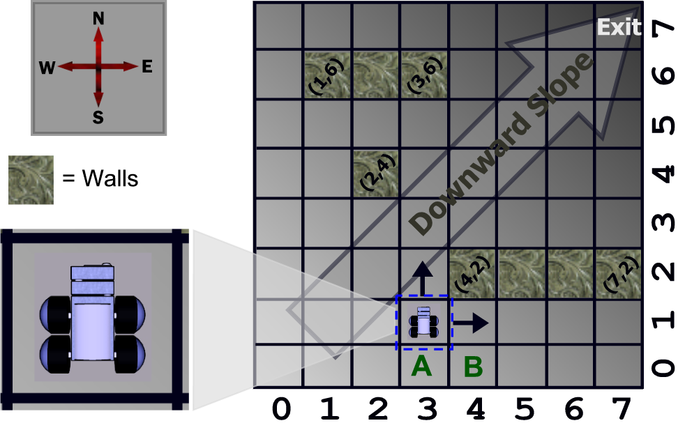

34th ICPC World Finals · Problem C
The researchers at International Bio-bot Makers (IBM) have invented a new kind of Bio-bot, a robot with behavior mimicking biological organisms. The development of the new robot is at a primitive stage; they now resemble simple four-wheeled rovers. And like most modern robots, Bio-bots are not very mobile. Their weak motors and limited turning capability put considerable limitations on their movement, even in simple, relatively obstacle-free environments.
Currently the Bio-bots operate in a room which can be described as an m×n grid. A Bio-bot occupies a full square on this grid. The exit is in the northeast corner, and the room slopes down towards it, which means the Bio-bots are only capable of moving north or east at any time. Some squares in the room are also occupied by walls, which completely block the robot. Figure 1, which corresponds to the sample input, shows an example of such a room.

Clearly, a Bio-bot located on square A is capable of leaving the room, while one at square B is trapped inside it, no matter what it does. Locations like B are called “stuck squares.” (Walls do not count as stuck squares.) Given the description of a room, your job is to count the total number of stuck squares in the room.
Input consists of multiple test cases, each describing one room. Each test case begins with a line containing three integers m, n, and w (1 ≤ m, n ≤ 106, 0 ≤ w ≤ 1000). These indicate that the room contains m rows, n columns, and w horizontal walls.
Each of the next w lines contains four integers x1, y1, x2, y2, the coordinates of the squares delimiting one wall. All walls are aligned from west to east, so 0 ≤ x1 ≤ x2 < n and 0 ≤ y1 = y2 < m. Walls do not overlap each other. The southwest corner of the room has coordinates (0,0) and the northeast corner has coordinates (n -1, m -1).
The last test case is followed by a line containing three zeros.
For each test case, display one line of output containing the test case number followed by the number of stuck squares in the given room. Follow the format shown in the sample output.
8 8 3 1 6 3 6 2 4 2 4 4 2 7 2 0 0 0
Case 1: 8